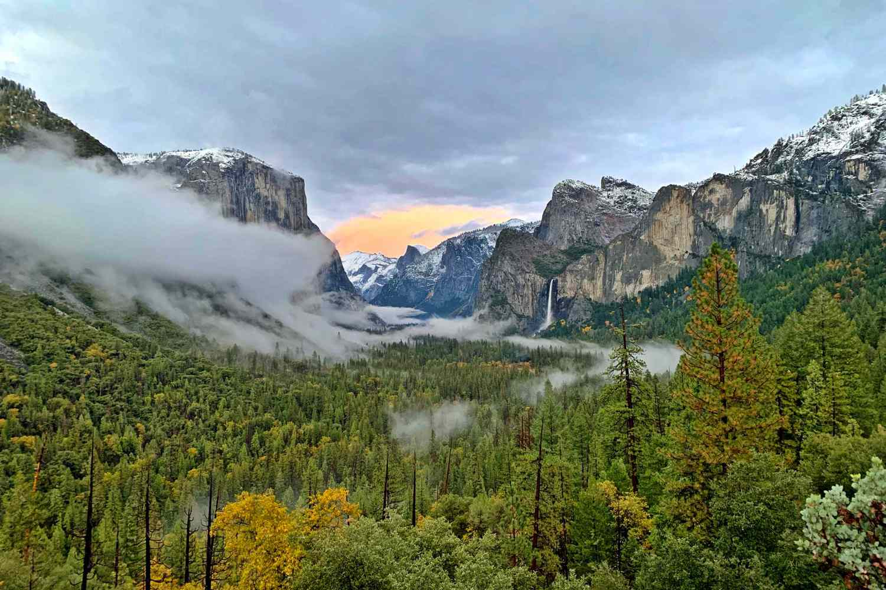

<!DOCTYPE html>

<style>
#map {
     width: 894px;
     height: 813px;
   }
 .leaflet-popup-content > table img {
    width: 300px;
   }
 .leaflet-popup-content > img { /*for other leaflet maps you can add rule as well*/
    width: 300px;
   }
</style>

<html = style="height: 100%;">
  <head>
    <title>DnD World Map</title>
    <meta name="viewport" content="width=device-width, initial-scale=1.0">
    <link rel="stylesheet" href="scripts/leaflet.css">
    <script src="scripts/leaflet.js"></script>
  </head>
  
  <body style="height: 100%;margin: 0;">
    <div id="map" style="width: 100%; height: 100%; background: #000000;"></div>
    <script type="text/javascript">
  //Creating the Map
    var map = L.map('map').setView([2, 1], 1);
    L.tileLayer('Map/{z}/{x}/{y}.jpeg', {
      continuousWorld: false,
      noWrap: true,  
      minZoom: 2,
      maxZoom: 5,
    }).addTo(map);
  //Coordinate Finder
    var marker = L.marker([0, 0], {
      draggable: true,
    }).addTo(map);
    marker.bindPopup('LatLng Marker').openPopup();
    marker.on('dragend', function(e) {
      marker.getPopup().setContent(marker.getLatLng().toString()).openOn(map);
    });
  //Marker
    var Boondocks_Fort = L.marker([-50.485474, 21.005859]).bindPopup("<h1>Boondocks Fort</h1> Old harbour citadel, now overrun by ratmen and rumours speak of other things from the underdark  ").addTo(map)
    var The_Crag = L.marker([-45.213004, 45.878906]).bindPopup("The Crag ").addTo(map)

  //Circle
var Pallo = L.circle([-32.842674, 27.333984], {
    color: 'red',
    fillColor: '#f03',
    fillOpacity: 0.5,
    radius: 200000,
})
.addTo(map)
.bindPopup("<h1>Ancient Grove</h1> ")

//Marker Groups
  var mg_city = L.layerGroup([Boondocks_Fort]);
  var mg_area = L.layerGroup([The_Crag, Pallo ]);
//Marker Overlay
  var overlays={
    "Cities" : mg_city,
    "Areas" : mg_area,
    }
//GROUP CONTROLS
  L.control.layers(null, overlays).addTo(map);
    </script>
  </body>
</html>
